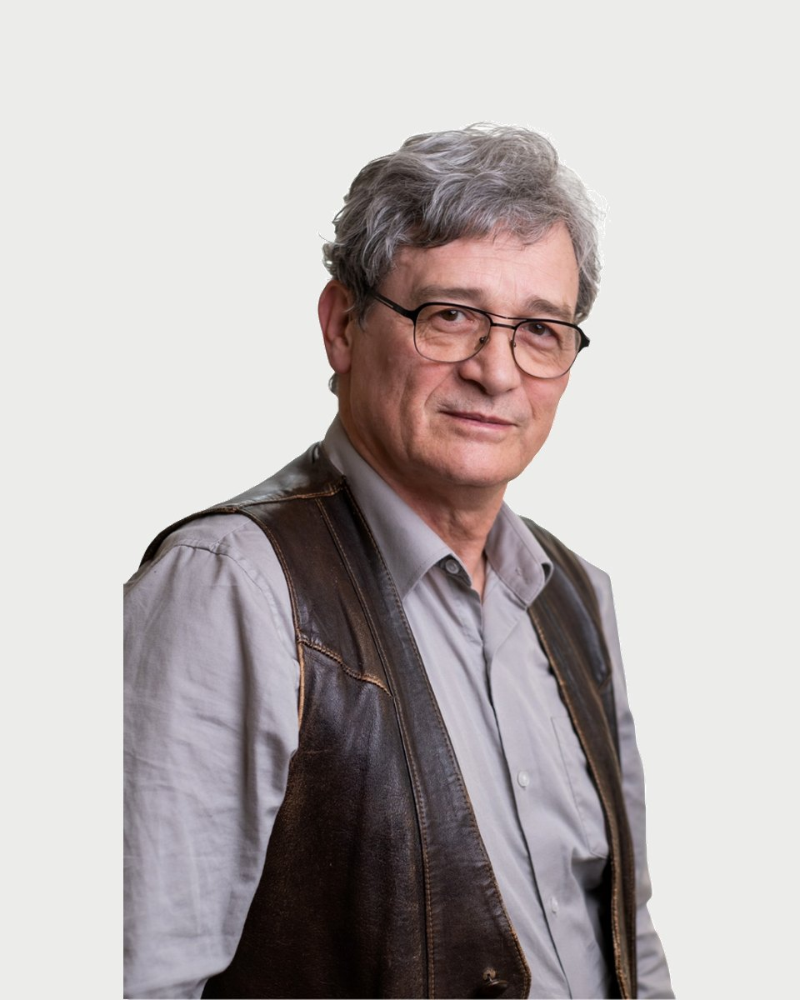

Regiszter 29 · Coach
Szabó András
- Amiben segít
- Amikor a szülő és a tizenéves gyereke nem értik egymást
- Rossz társaságba került a felnőtté váló gyerek
Amiben segítek
Szabó András saját megfogalmazásában. Ha a listában nem találja a saját helyzetét, az első beszélgetésen ezt is megbeszélik.
- Amikor a szülő és a tizenéves gyereke nem tudnak beszélni egymással
- Amikor a szülő és a tizenéves gyereke nem értik egymást
- Rossz társaságba került a felnőtté váló gyerek
- Amikor a szülő és a tizenéves gyereke csalódást okoztak egymásnak (lopott otthon vagy máshol, iskolai kudarc, bántották, bántott valakit, drogfogyasztás, bűnelkövetés, korainak gondolt párkapcsolatban a gyerek, megszökött otthonról, terhes lett stb., sehová nem engedik, átkutatják a holmiját, róla döntenek, nélküle, eltiltják a barátjától/barátaitól, nem állnak vele szóba, sőt feléje sem néznek, rákényszerítik valamire, megszégyenítik stb.)
- Amikor a felnőtté váló gyerek egyszer csak nem fogad szót, titkai vannak, talán az iskolai teljesítménye is romlik
Bemutatkozás
Szabó András saját szavaival. Egy alkalom díja 15-18 ezer forint. A díjakról
Olyan fiatalok világában, különféle problémáik kezelésében, feldolgozásában szereztem nagyon közeli, több évtizedes tapasztalatokat, akiknek a felnőtté válás komoly nehézségekkel járt, akik tizenéves életük közepén, végén valahogyan szembe keveredtek a közvetlen környezetükkel, a családjukkal, a társas környezetükkel.
Hogy átlendülhessenek a nehézségeiken és akadályaikon, persze nem csupán az érintett, bajba keveredő fiatalokat várom, hanem ő személyes környezetüket, szüleiket, barátaikat is, akikkel nem csupán az összesűrűsödött, kritikus helyzeteket, hanem akár az együttélés nyugtalanító félreértéseit és egyensúlyvesztéseit is átbeszélhetjük.
Várom ugyanakkor azokat is, akik egyszer csak úgy érzik, teljesen megakadtak. Mintha elfogyott volna minden erejük, éppen akkor, amikor egyre nagyobb erőfeszítésre van szükségük ahhoz, hogy ne dőljön össze velük minden.
Bármelyikünkkel megtörténhet ugyanis, hogy egyszer csak elakadunk, hogy valahogyan nem úgy megy, mint korábban. Sőt, bárhogyan próbálkozunk egyedül, újra és újra nekikezdünk, egyre kevésbé megy. Nem igazán értjük, hogy nem tudjuk, hogy miért nem tudjuk. Könnyű persze azt mondani, hogy akkor mást kellene csinálni.
Nem kell azt hinnünk, hogy magunkra maradtunk. Azt sem, hogy már minden úgy marad. Talán nem is a szerencse hagyott el.
"Csupán egy jó lépés kell a változáshoz. Csakis olyan lépés, amilyet tudunk. De azt feltétlenül. Persze, csak ha tényleg változtatni akarunk."
Bármit tehetünk, de semmit sem muszáj. Próbáljuk meg, és kezdjünk el róla beszélgetni.
Azoknak tudok inkább segíteni, akik maguk is változni szeretnének, akik meg is tennék mindazt, ami rajtuk múlik, akik mindehhez a saját erejüket keresik. Akik szeretnék hinni abban, hogy van élet problémákon túl.
Az ember még nem ember csak hadonászó veszélyes kamasz. Az ember akkor lesz ember, ha átvilágítja mélyéig önmagát s a benső világosságból környezetére sugarat bocsát.Weöres Sándor
Az ember még nem ember
csak hadonászó veszélyes kamasz.
Hitvallás
Képzés és szakmai út
22 tétel. A képzések és a szupervízió az akkreditált szakképzőhely rendjében folynak. Mit jelent ez Önnek
Iskolai végzettség
Társas készségek, kompetenciák
Elismerések
Szakmai tapasztalatok
Tanítómesterek
- dr. Alpár Zsuzsa, pszichológus
- Bácskai Júliapszichológus
- Mérei Ferencpszichológus
- Vekerdy Tamáspszichológus
Rólam mondták
Kliensek visszajelzései, a hozzájárulásukkal, névtelenül.
Egészen jól működnek azok, amikről beszélgettünk
Úgy érzem, most erőre kaptam, bár igazán nem tudom, hogy mitől
Egyszer csak megnyugodtam, és most már könnyebben megy minden
Azt hiszem, mostantól, hogy jobban bízok magamban, újra menni fog
Regiszter 29
Időpont Szabó Andrásnál
Az ügyfélszolgálat hétköznap 9 és 15 óra között egyeztet. Ha bizonytalan, hogy Ön kihez tartozik, azt is megbeszélik, és ha kell, más kollégát javasolnak.